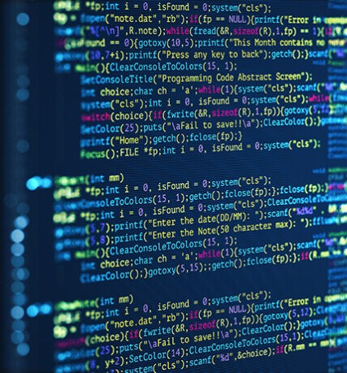

Projet "Génie Logiciel" - Idée d'Avancement
Notre objectif pour le développement de notre projet "Génie Logiciel" se base principalement sur du Java. Nous aimerions créer différentes stratégie pour rendre les différents bots plus "intelligent" lors des parties, et peut-être les rendre différentes même en recommençant une nouvelle.
Dans l'objectif global de notre projet, nous souhaiterions avoir différents "objets" personnalisé, que ce soit pour les Unités comme pour les ressources ou bien même les bâtiments. Donnant plus de vie à notre réalisation, le développement du scénario de l'histoire autour du jeux reste également une phase importante de notre point vue.
